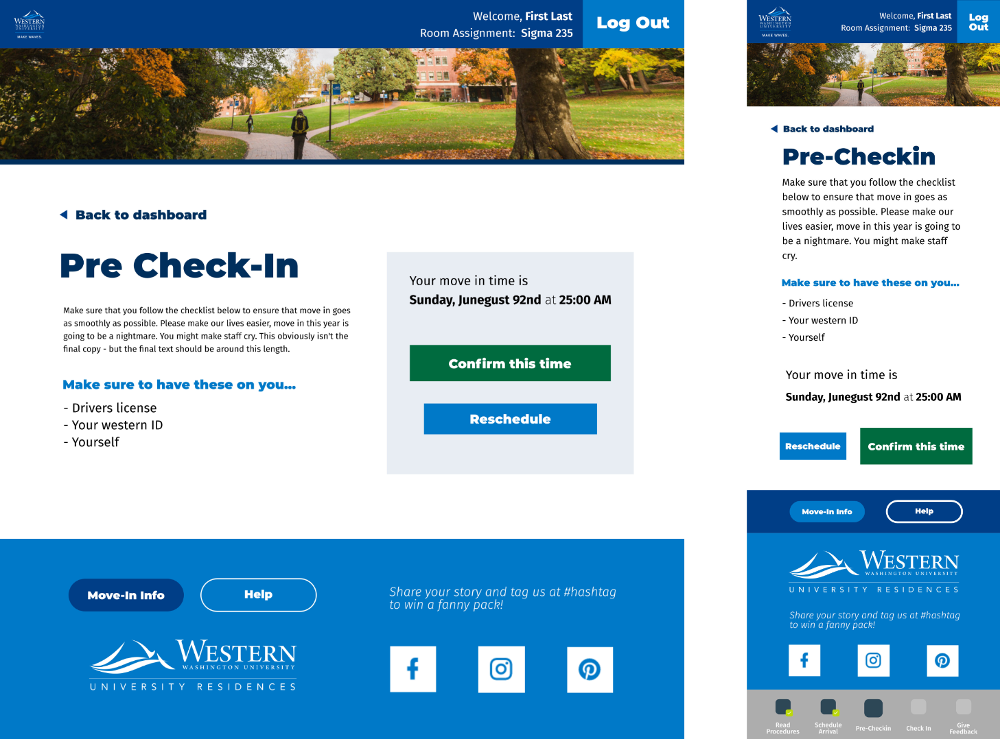

2 weeks - August 2020
Work, Web App Design
Research, Wireframing, High fidelity prototypes
We had two weeks to design and prototype a new move-in app that would guide students through a socially distanced move-in. The logistics of the move-in were being decided concurrently with the design/development process, which demanded flexibility in design.
Designed a web-app using the same design language and information hierarchy as the Housing website. This saved on internal resources and made it easier for students already familiar with the site to use our app. To further assist with the shorter timeframe, the developers started work on the backend during the design process once the core user flow was locked down. This was made possible with close communication with the developers and saved on a lot of time and resources.
I collaborated with two other designers to conduct initial research on the technical and logistical constraints of the application. We then sketched out wireframes on invision. After we agreed on a set of wireframes and the core user flow, I was responsible for creeating high fidelity prototypes and refining the application, and also handled the handoff to the developers.
Understanding the core user flow
Despite the ambiguity surrounding the details, we knew the core user-flow of the app wouldn't change. Users would need to schedule a move-in time and show a QR code on the move-in day. We started doing some light research and sketching based off of that knowledge and came up with our core user flow:
Due to the time constraints, we moved right into wireframing as soon as possible. Our team met on invision and spent a few hours hashing out different layout ideas on the virtual whiteboard. Most of the decisions made here involved the scheduling process - we initially wanted to include a calendar widget but realized that would be inefficient as move-in would at most span a week and there would be multiple options per day for move-in time slots. As such, we settled for a series of drop downs, as that would also greatly decrease development time.
We went through several iterations for each screen to explore user requirements and challenge how we could lay things out
Designing for development was the number one priority.Our goal was never to make a cutting edge, trending looking web app. We needed something fast that looked passably good and fit into Western's branding guidelines, but more importantly we needed to design for code and make sure that our software team could implement our ideas very quickly.
For the most part, we kept layouts very linear - at most on some desktop screens we would use two columns but design it in such a way that it would translate naturally to flexbox.
Since development was done concurrently with the design process, we would meet with developers frequently during their standups to iterate on different design ideas. This lead to key insights, such as leveraging the Material Design icon library instead of spending time making our own.
Despite this not being the most aesthetically striking project, I'm proud of the work we did over those two weeks. This was my first proper UX project outside of case studies, and I felt like I learned a lot about the process as well as what it meant to collaborate with others in a creative, collaborative environment to meet deadlines. I was satisfied with the overall process and how we approached the design challenge. However, looking back, I think there were a few things that I would have changed:
Since the other designers had their own fair share of projects at the time, I was solely responsible for producing high fidelity prototypes. Since speed was a concern, I defaulted to using Illustrator at the time since that was what I was most comfortable with. However, this made small edits and collaboration a lot more difficult, as not everyone had illustrator.
In retrospect, using Figma would have saved us a lot more time, despite my inexperience with that tool. Figma is free and web based, which would have allowed the developers to chip in and edit during standups. Additionally, Figma's built-in CSS tools would have made the handoff a lot simpler as well.
There's not much to say here except that the majority of our time was spent on the mobile application. This made intuitive sense, since most people logging in the day of would be unlikely to be doing so on a desktop/laptop - the move-in user flow was intended to be experienced on mobile. However, this led us to neglect the desktop views in favor of polishing the mobile views a lot more. This is unfortunate, since a lot of people would most likely schedule their arrival on a computer.
If I had more time, I would have designated someone to focus on the desktop view a little bit more and spent some more manpower/resources on polishing those up to the same level that we polished the mobile views.